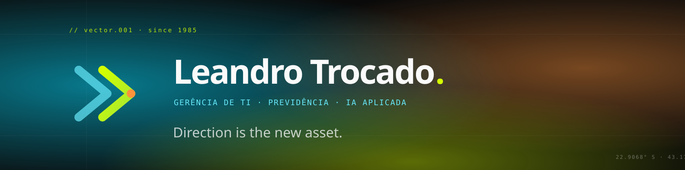
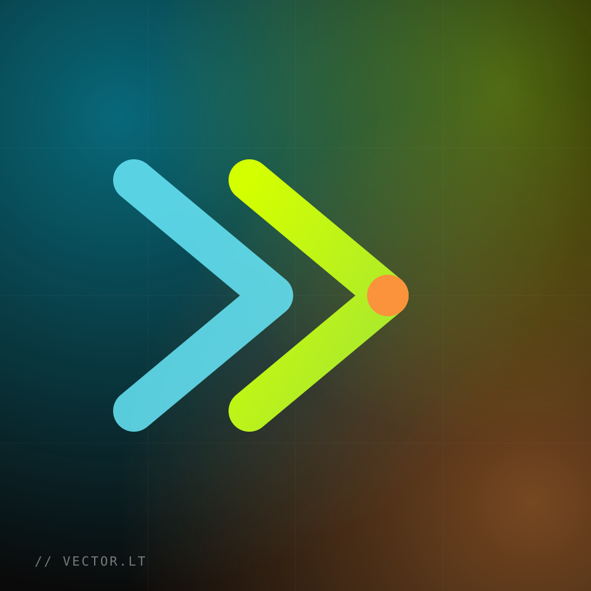
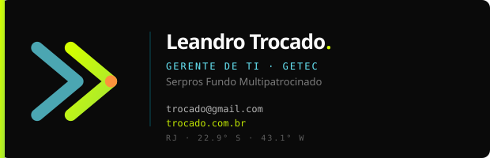
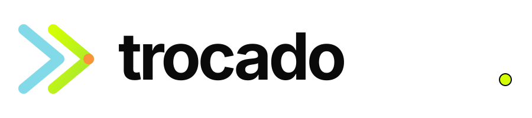
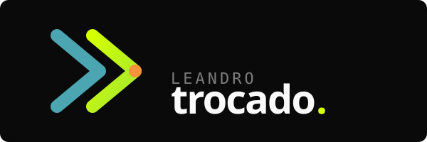

Direção é o novo recurso. Sistemas, IA, decisão e movimento intencional para quem opera entre o técnico e o estratégico.
O sobrenome "Trocado" guarda uma palavra de movimento — transformação, intercâmbio, deslocamento. A marca pega esse núcleo e o entrega como velocidade aplicada.
IA aplicada, automação, decisão assistida. A marca olha para frente sem virar costas para o passado.
Reduzir ruído, isolar variável, mover em vetor. Pensamento sistêmico em ação.
Infraestrutura como arnês: não prende, conduz. Sistemas que sustentam expansão.
Movimento entre territórios — técnico, estratégico, internacional, intelectual. Curiosidade como método operacional.
20+ anos de prática. A marca não precisa gritar; ela é precisa, calibrada, sem floreio.
Três tratamentos cobrem todas as superfícies — claro, escuro e monocromático (herda cor via currentColor).
Base preta off-black. Lime ácido como direção. Cyana elétrico como contexto. Laranja laser como objetivo. Off-white como respiro.
Space Grotesk para tudo que tem voz. JetBrains Mono para tudo que tem dado. Sem serifa, sem licença criativa, sem ruído.
Gerente de TI numa Entidade Fechada de Previdência Complementar, com vinte anos de prática em desenvolvimento, análise e gestão. Pensamento sistêmico aplicado à automação, IA e tradução de regulação em sistema executável.
// stack.signature const trocado = (input) => { return input .map(decode) .filter(useful) .reduce(toDirection); };
Cinco peças prontas. SVGs vetoriais — exporte PNG na resolução que quiser. Abra os arquivos na pasta brand/.





A primeira é a recomendada: bilíngue, futurista, defensável em LinkedIn internacional. Alternativas em português pra contexto institucional.